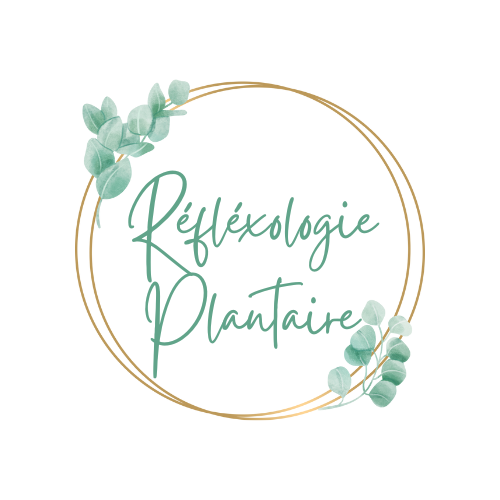

Qui suis-je?
Bonjour tout le monde,
Je m'appelle Fanny et depuis 2017, je prends plaisir à me former à diverses thérapies holistiques. J'ai commencé à me former au reiki en Inde, où ce pays a été un coup de foudre ! Je me suis intéressée à leur médecine traditionnelle qui est l'ayurveda, j'ai donc appris le massafe abdhynga à «Pondy chérie». Tout au long de mon chemin, j'ai fait des rencontres qui m'ont permis de découvrir d'autres thérapies. Je ne souhaite pas ouvrir un cabinet pour le moment, c'est pourquoi je vous propose de me déplacer chez vous (à 30km max de Dunkerque).
Étant aide soignante et ayant travaillé avec des personnes en situation de handicap en santé mentale, je me ferais un plaisir de prendre soin de vous.
-  Réflexologie plantaire
-
 Massage abhyanga/udara
Massage abhyanga/udara
-
Massage méthamorphique
-
 Magnétisme et reiki (les soins peuvent se faire à distance)
Magnétisme et reiki (les soins peuvent se faire à distance)
Tout le monde à besoin de prendre soin de soi !